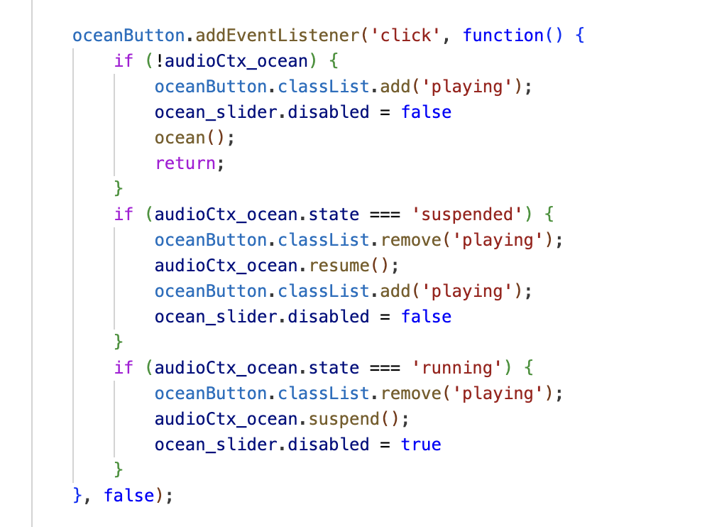
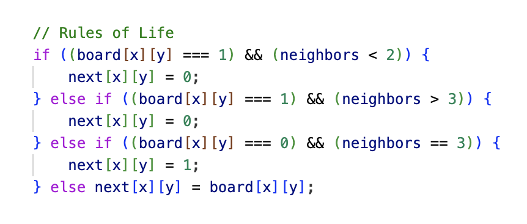

In my final project project, I utilized the Web Audio API to create a captivating symphony of sounds that connected to a canvas of cellular automata. I played around with various elements like ADSR envelopes, oscillators, AM synthesis, filters, and more to shape each individual sound. Every sound demanded careful attention to detail, and in connecting it to the cellular automata, the sounds control the color and opacity of the cells.
I chose to incorporate a variety of basic sounds that are typically known to be background noises. To tackle more complex sounds, I referred to Farnell's "Designing Sound Part IV: Practicals." This resource served as a valuable guide through the intricacies of sound design, and I'll share two examples of how I created sounds: Rain sounds and Cricket sounds.
Here is the audio signal flow graph for these two sounds.
INSERT IMAGE
Creating the sound of raindrops began with white noise, filtering it to capture only low frequencies using a low pass filter. Introducing an oscillator and a phasor allowed me to create the sounds of individual rain droplets hitting a surface. Adjusting the frequencies so that it would match a typical raindrop was difficult as the sounds vary so much in real life depending on the size of the rain drop as well as the type of surface it would be hitting.
The chirping of crickets starts off with a brown noise. Adding in a gain node, I used a very high-frequency oscillator to achieve the pitch, drawing inspiration from numerous YouTube videos, such as this one, for accuracy. I then added a phasor to control the rate at which the cricket chirps before incorporating in AM synthesis for a nuanced and authentic sound.
With the sounds perfected, I seamlessly integrated them into a user-friendly interface, allowing users to toggle sounds on and off. The addition of an amplitude-adjusting slider allows user to adjust the gain node for each sound. Together, these two features allow the user to overlay sounds and create unique sounds tailored to their preferences.
Here is how I connected the button and slider.
Seeking to add a layer of creativity, I explored the captivating realm of cellular automata.
The way cellular automata works is through a discrete mathematical model with a grid of cells. The cells evolve over time depending a set of rules:
Here is the code that enforces those rules:
And here is the cellular automata running without any connections to sound! Click to start it over again.
Drawing inspiration from pre-written cellular automata code exemplified in this website, I crafted the basic structure of one. Then, I connected the amplitudes of each sound, controlled by the slider values, to the colors of the cellular automata. Each sound is assigned a distinct color, and as their amplitudes increase, the opacity of the automata also increases. When multiple sounds are played simultaneously, the colors are overlaid, which creates new fun colors.
Here is an example of my code running!
ENTER VIDEO
Thank you for reading and enjoy this project!